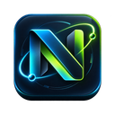

Nexa AI Browser Bridge
Conexión local segura hacia tu conocimiento persistente.
Sin verificar.
Cómo conectarla
1. Abre Nexa AI → Ajustes → Browser Extension Bridge.
2. Copia el Pairing token y pégalo aquí.
3. Pulsa “Guardar y verificar”.
4. Deja activo el Browser Worker si quieres que la extensión reciba búsquedas automáticas de Nexa y devuelva las fuentes a la base local.
La API escucha únicamente en 127.0.0.1; el conocimiento se escribe en la base local de tu computadora, no en la extensión.